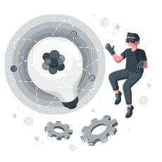

Hi, everybody!
My name is Gustavo Rocha and i'm 20 years old. Currently, i'm a student at FATEC Sorocaba - José Crespo Gonzales, but i graduated in Mechatronics at ETEC Rubens de Faria e Souza in 2021. I've always been a enthusiast by disruptive technologies, development WEB and Mobile.
In my spare time I like to do sports and develop my own projects related to technology. My main skills are focused on Front-end with HTML, CSS, Javascript and React JS. But I also like to use Typescript, Node JS and React Native.

See my professional CV.